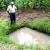
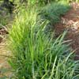
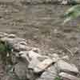
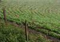

Structural Practices for Conserving Soil and Water
Contour Ditches
These are ditches that are dug on sloped hillside farms to hold water and prevent sheet erosion. A new innovation in this practice is the zanja productiva which is a larger contour ditch partially filled with organic material and planted with moisture tolerant species.
Water Catchments
These water deposits are at minimum a cubic meter in dimension and are dug in conjunction with the contour ditches to hold excess quantities in reserve for times of drought.
{kind=link}
Vegetative or Rock Soil-Conserving Barriers
 {kind=link}
{kind=link}
These are barriers planted with bunch grass or constructed with rocks on the contour so as to slow down the flow of water on hillsides.
Terraces (individual or bench)
 These are constructed on slopes too steep for crop cultivation where trees providing fruit, fuel, or fodder are to be grown.
{kind=link}
Minimum Tillage
This is a practice in which only the planting furrow is cultivated, thereby leaving the remaining soil structure intact so as to prevent erosion.
Gully Erosion Protection
This includes a variety of very effective practices that serve to slow the flow of water in gullies and catch and hold soil runoff.
video